Phân Tích Kiến Trúc MapLibre Native
Bộ tài liệu chuyên sâu cho CTO, Architect, Tech Lead và Senior Developer muốn hiểu native map rendering engine từ first principles tới ứng dụng thực tế cho navigation.
Executive Summary
MapLibre Native là native map rendering engine mã nguồn mở, dùng C++ core để render bản đồ vector/raster bằng GPU trên nhiều platform. Nó giải quyết bài toán biến style JSON, vector tile, glyph, sprite, camera và input người dùng thành frame bản đồ mượt, tương tác và có thể offline.
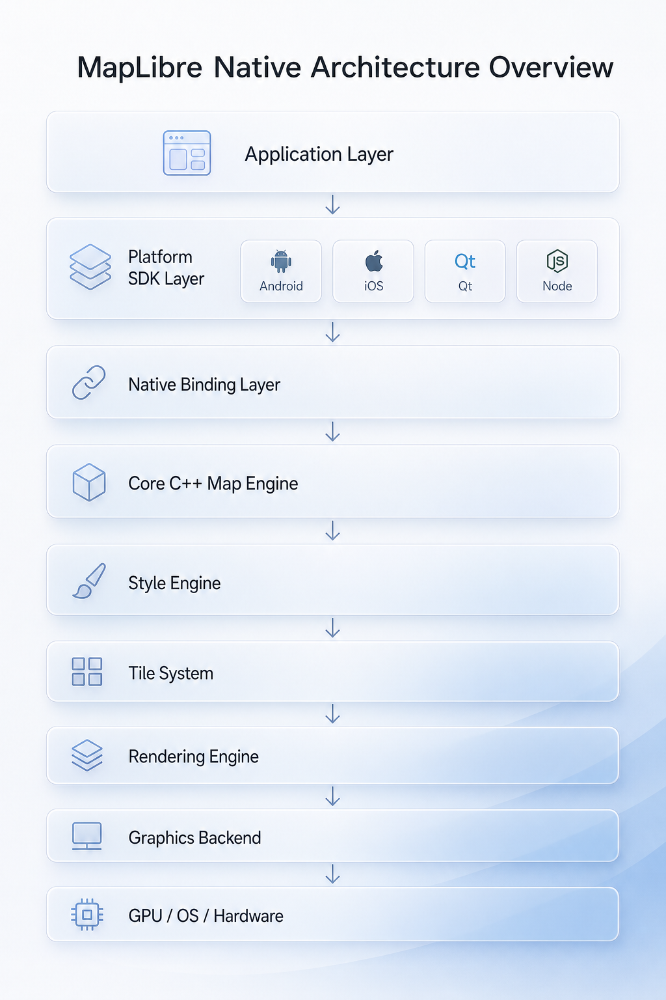
Vì sao cần native map engine?
Navigation cần pan/zoom/pitch/bearing liên tục, đặt label tránh va chạm, cập nhật route/traffic/location realtime, kiểm soát cache/offline và render surface native. Bitmap tile hoặc web wrapper đơn giản không đủ cho các yêu cầu đó.
Giá trị cốt lõi
C++ core cross-platform, style declarative, tile-based scalability, GPU-first rendering, platform SDK giữ lifecycle/input, còn engine giữ logic map/render.
First Principles Analysis
Bản đồ số là mô hình không gian nhiều lớp. Vector tile là nguyên liệu địa lý; raster tile là kết quả render sẵn. App navigation cần nguyên liệu để đổi style, query feature, xoay/nghiêng camera, render route/traffic và giữ label ổn định.
| Khái niệm | Bản chất | Hệ quả kiến trúc |
|---|---|---|
| Camera | Trạng thái nhìn bản đồ: center, zoom, bearing, pitch, padding | Thay đổi mỗi frame, không được kéo theo parse lại toàn bộ style. |
| Style | Mô tả declarative của bản đồ | Cần diff, snapshot immutable và runtime styling. |
| Source | Nơi lấy dữ liệu | Một source phục vụ nhiều layer, cache theo tile/resource. |
| Layer | Quy tắc vẽ dữ liệu | Layer ordering và paint/layout property quyết định render pass. |
| Tile | Đơn vị tải/parse/cache | Scale được từ viewport nhỏ tới toàn cầu. |
Tổng Quan Kiến Trúc Hệ Thống
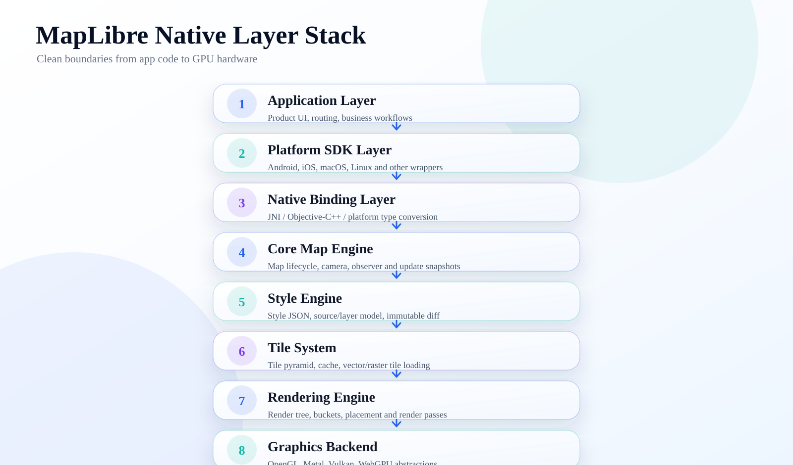
Phân Tích Cấu Trúc Source Code
| Khu vực | Vai trò | Ý nghĩa kiến trúc |
|---|---|---|
include/mbgl | Public C++ API | Ranh giới ổn định giữa core và platform wrapper. |
src/mbgl/map | Map lifecycle, camera, transform | Nơi tạo UpdateParameters từ style/camera/platform. |
src/mbgl/style | Style spec, layer/source impl, expression | Declarative model + immutable diff. |
src/mbgl/renderer | Renderer orchestration | RenderOrchestrator, RenderTree, passes, layer groups. |
src/mbgl/tile | Tile lifecycle | TileLoader, GeometryTileWorker, vector/raster tile. |
src/mbgl/storage | Resource loading/cache/offline | FileSource, DatabaseFileSource, PMTiles/MBTiles/network. |
platform/android | Android SDK/JNI | MapView, NativeMapView, MapRenderer. |
platform/ios, platform/darwin | Apple SDK | MLNMapView, MLNRenderFrontend, Metal/OpenGL/WebGPU. |
render-test, metrics | Visual regression | Bảo vệ renderer bằng image diff, thiết yếu với map engine. |
Core Engine
Map::Impl giữ Transform, Style, AnnotationManager, FileSource, RendererFrontend và MapObserver. Khi camera hoặc style thay đổi, onUpdate() đóng gói snapshot gồm transform state, source impls, layer impls, images, glyph URL, sprite state, light và tile LOD options.
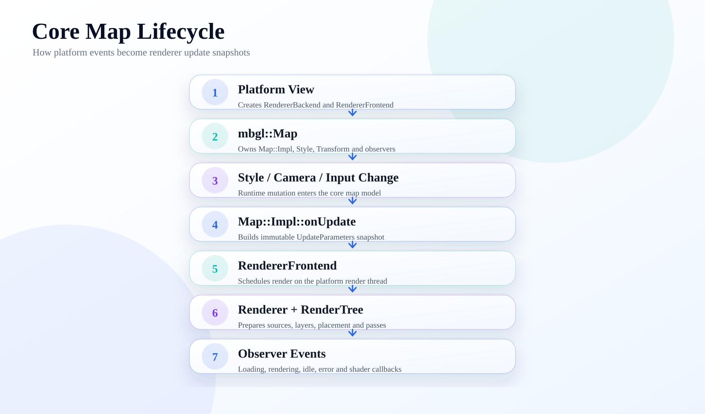
State management
Public style object mutable, private impl immutable. Renderer diff snapshot thay vì share mutable state.
Scheduling
Actor, mailbox, scheduler và run loop giúp worker/render thread giao tiếp bằng task.
Observer
Map/style/renderer/tile/shader callbacks được platform SDK chuyển thành native events.
Rendering Pipeline
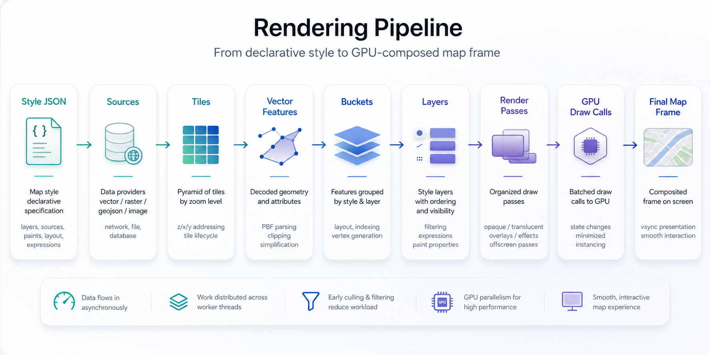
RenderOrchestrator::createRenderTree() diff image/layer/source, tạo hoặc update RenderLayer/RenderSource, cập nhật tile pyramid, prepare source/layer, chạy symbol placement, rồi trả về RenderTree. Renderer::Impl::render() chạy upload pass, layer group update, 3D pass, render targets, clear, opaque pass, translucent pass, debug pass và present.
Style / Source / Layer Architecture
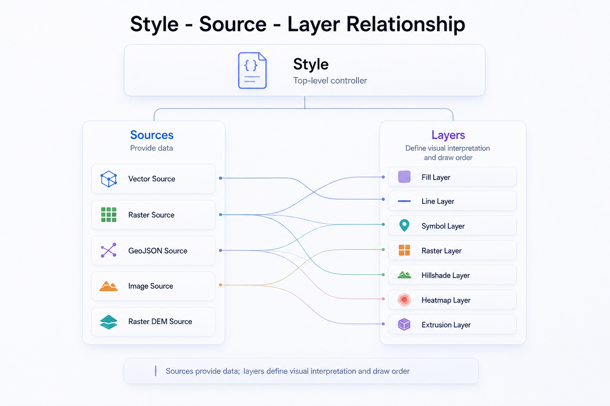
| Thành phần | Bản chất | Ví dụ | Vai trò |
|---|---|---|---|
| Style | Cấu hình bản đồ đầy đủ | Demo style JSON | Kết nối source, layer, sprite, glyph, light. |
| Source | Provider dữ liệu | Vector, raster, GeoJSON, DEM | Cung cấp tile/feature cho layer. |
| Layer | Quy tắc render | Line road, symbol label | Chọn source và áp layout/paint/filter. |
| Layout | Thuộc tính ảnh hưởng bucket | text-field, line-cap | Thường cần relayout tile. |
| Paint | Thuộc tính visual | line-color, fill-opacity | Có thể evaluate/upload nhẹ hơn. |
Tile System
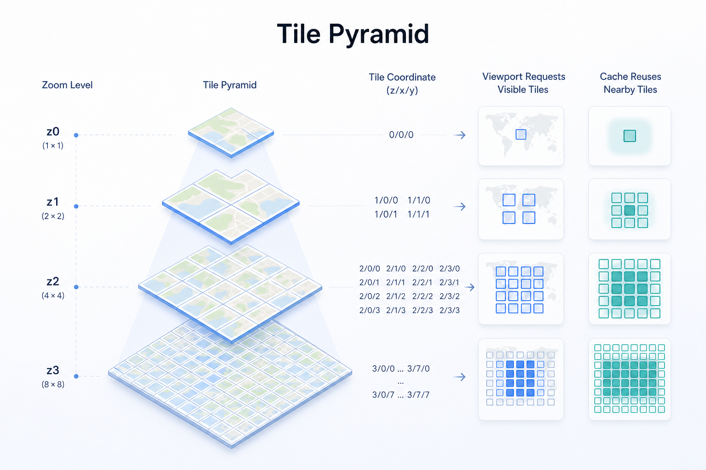
Tile chia thế giới thành các ô z/x/y để tải, parse, cache và render độc lập. TilePyramid giữ active tiles, rendered tiles và TileCache. TileLoader request cache trước, network sau khi tile required. GeometryTileWorker parse vector feature, tạo bucket và xử lý glyph/image dependency.
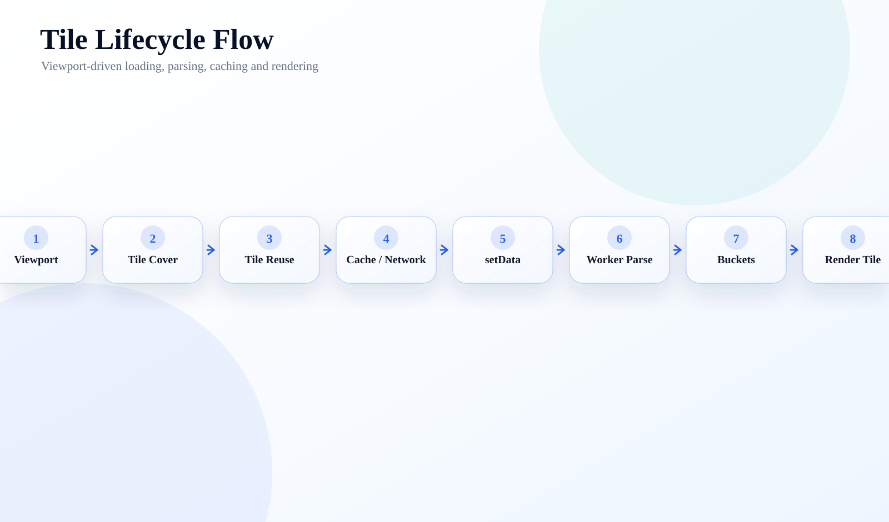
Platform Abstraction
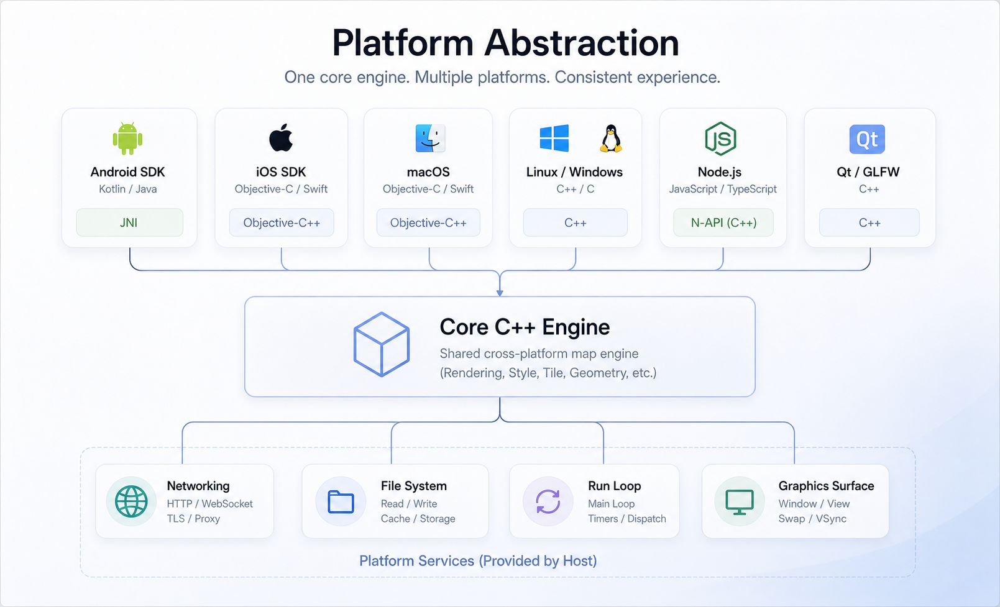
| Platform | Ngôn ngữ/API | Kết nối với core | Vai trò |
|---|---|---|---|
| Android | Java/Kotlin + JNI C++ | NativeMapView, MapRenderer | Lifecycle, gesture, surface, resource bridge. |
| iOS | ObjC/Swift-facing + ObjC++ | MLNMapView, MLNRenderFrontend | UIKit view, delegate, Metal/OpenGL/WebGPU backend. |
| macOS/Darwin | ObjC++ shared layer | platform/darwin | Shared Apple networking/style/offline wrappers. |
| Linux/GLFW/Node/Qt | C++/bindings | Core API + backend | Desktop, testing, tooling, embedding. |
Android Architecture
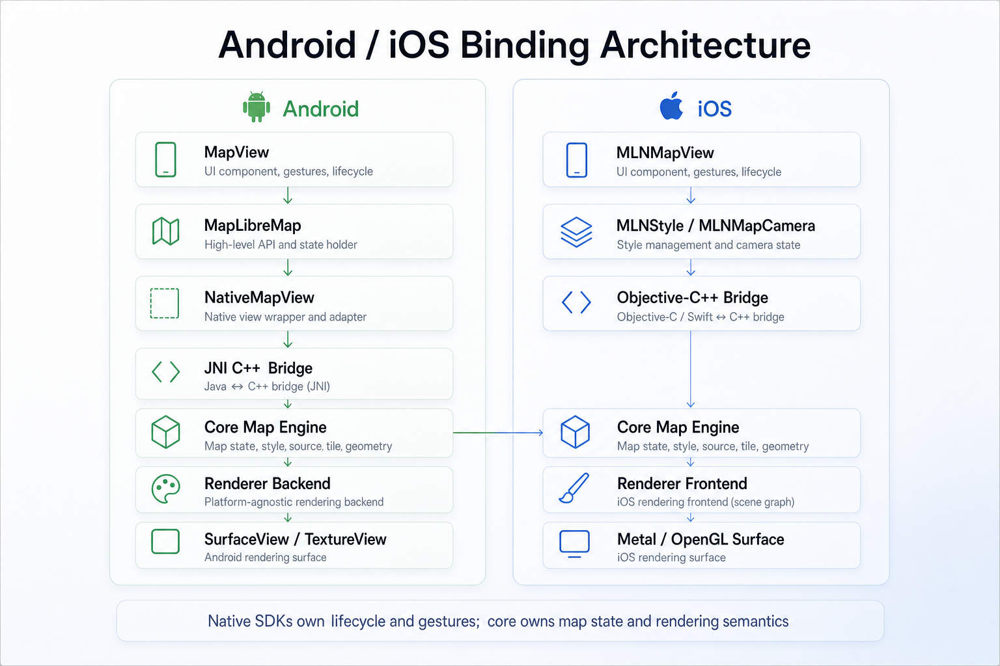
MapView là public view, tạo MapLibreMap, Projection, UiSettings, annotation containers, Transform, MapGestureDetector và LocationComponent. Native peer NativeMapView expose camera/style/query/annotation qua JNI và kế thừa MapObserver. MapRenderer giữ render backend, renderer, actor ref, window và update parameters trên GL/render thread.
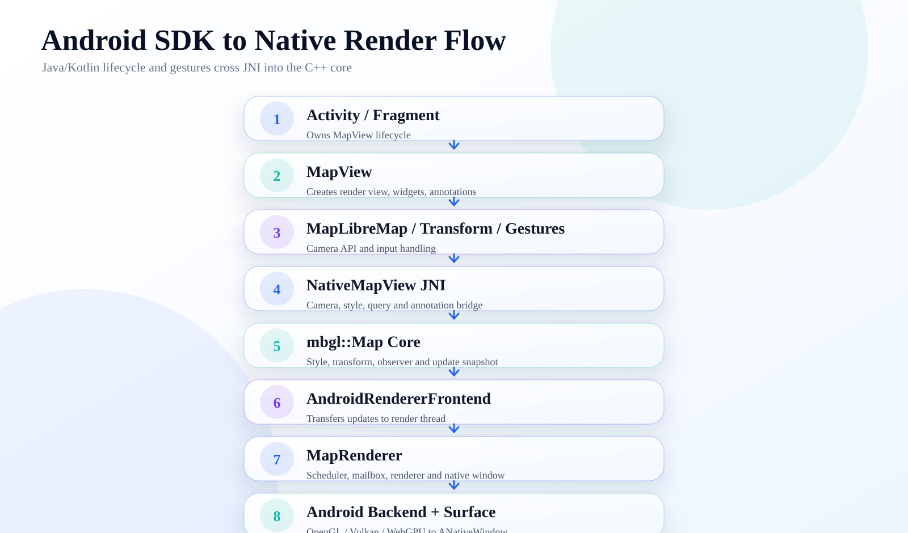
iOS Architecture
MLNMapView tạo backend implementation theo compile flag: Metal, WebGPU hoặc OpenGL. MLNRenderFrontend nhận UpdateParameters, gọi setNeedsRerender, rồi render trong BackendScope. Metal implementation dùng MTKView, MTLCommandQueue, MTLCommandBuffer, CAMetalDrawable, pixel format BGRA8Unorm và depth/stencil Depth32Float_Stencil8.
Graphics Backend
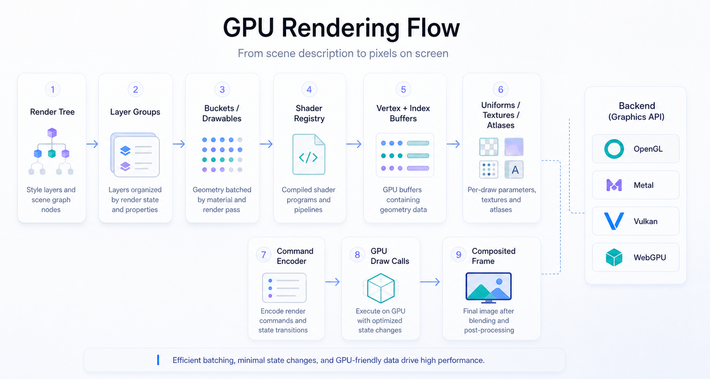
| Backend | Source | Ý nghĩa |
|---|---|---|
| OpenGL | src/mbgl/gl | Legacy rộng platform, nhưng yếu trên Apple hiện đại. |
| Metal | src/mbgl/mtl, iOS Metal impl | Backend chính cho Apple, command buffer/render pass rõ hơn. |
| Vulkan | src/mbgl/vulkan | Explicit GPU control cho Android/desktop. |
| WebGPU | src/mbgl/webgpu | Abstraction hiện đại, gần tư duy Rust wgpu. |
| gfx | src/mbgl/gfx | Context, drawable, upload pass, render pass, buffer, texture abstraction. |
Networking, Cache, Offline
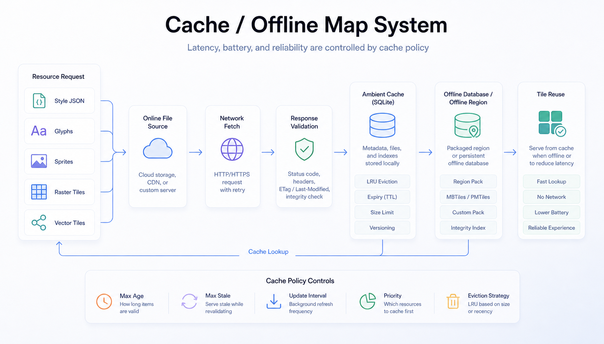
FileSource hợp nhất Asset, Database, FileSystem, Network, MBTiles, PMTiles và ResourceLoader. DatabaseFileSource giữ ambient cache và offline region APIs: reset/pack database, invalidate/clear ambient cache, set maximum cache size, create/list/delete/invalidate offline regions, observer status và merge offline regions.
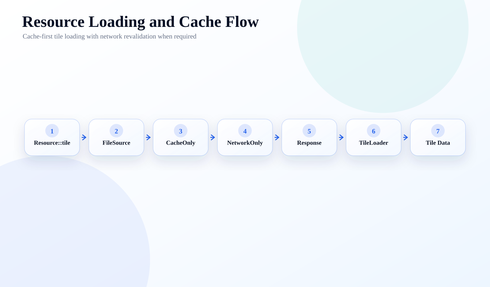
Performance Architecture
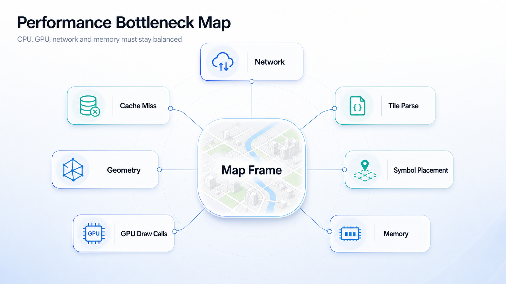
| Bottleneck | Cách MapLibre xử lý | Bài học cho Gofa |
|---|---|---|
| CPU geometry | Worker tile, bucket theo layer type | Không parse overlay trên main thread. |
| Symbol placement | Placement, CrossTileSymbolIndex, coalescing | Cập nhật label/traffic theo cadence. |
| GPU draw calls | Layer group, pass ordering, drawables | Batch marker/route/traffic overlay. |
| Network/cache miss | CacheOnly trước NetworkOnly, offline database | Offline corridor theo route. |
| Memory pressure | Tile cache, reduceMemoryUse, atlas lifecycle | Giới hạn icon atlas và traffic history. |
Extension Points
Runtime style
Add/remove source/layer, đổi paint/layout, feature state.
Custom source/layer
GeoJSON/custom geometry/custom drawable/plugin layer cho overlay đặc thù.
Offline/navigation
Offline region, route line, traffic layer, puck, maneuver arrow, query features.
Architectural Value
| Giá trị | Ý nghĩa | Vì sao quan trọng |
|---|---|---|
| Cross-platform core | Một C++ engine dùng chung | Đồng nhất render behavior giữa Android/iOS. |
| Separation of concerns | App, SDK, core, style, tile, renderer tách rời | Đổi backend hoặc SDK ít ảnh hưởng phần còn lại. |
| Declarative style | Style JSON là contract | Design/data/runtime update linh hoạt. |
| GPU-first rendering | Drawable, bucket, pass, shader registry | Đạt performance native cho vector map phức tạp. |
| Tile scalability | Xử lý theo viewport | Scale từ thành phố tới toàn cầu. |
| Ecosystem compatibility | Style Spec, MVT, PMTiles/MBTiles | Dễ dùng tooling và data hiện có. |
Bài Học Cho Gofa
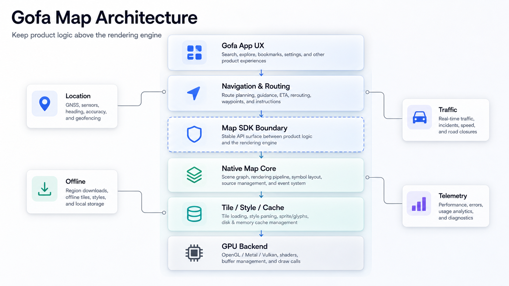
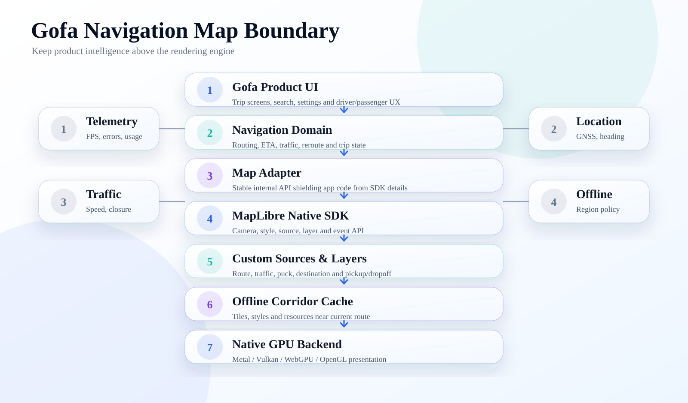
| Bài học | Ứng dụng cho Gofa | Ưu tiên |
|---|---|---|
| Giữ navigation logic ngoài renderer | Routing, ETA, reroute, trip state nằm trên map adapter | Rất cao |
| Dùng source/layer cho overlay | Route, traffic, destination, pickup/dropoff render batch | Rất cao |
| Coalesce realtime updates | Location/traffic update theo frame hoặc interval | Rất cao |
| Offline corridor | Prefetch/cache theo tuyến và vùng lân cận | Cao |
| Fork có chọn lọc | Chỉ fork khi cần đổi renderer/cache/offline/threading sâu | Trung bình |
| Rust + wgpu | Học mô hình pass/drawable/tile worker, dựng render-test trước | Rất cao |
Glossary
| Thuật ngữ | Giải thích dễ hiểu | Bản chất kỹ thuật | Ví dụ |
|---|---|---|---|
| Vector tile | Ô dữ liệu bản đồ chứa hình học | MVT/MLT geometry + properties | Road/building tile. |
| Raster tile | Ô ảnh bản đồ | PNG/JPEG/WebP đã render | Satellite imagery. |
| Tile pyramid | Lưới tile nhiều zoom | Quadtree theo zoom | z/x/y. |
| Style JSON | File mô tả bản đồ | MapLibre Style Spec | Source + layer list. |
| Source | Nguồn dữ liệu cho layer | Vector/raster/GeoJSON/image/DEM | OpenMapTiles source. |
| Layer | Quy tắc vẽ dữ liệu | Layout/paint/filter | Road label layer. |
| Renderer | Thành phần tạo frame | Renderer, backend context | Render vào Surface. |
| Render pass | Một lượt render có state đích | Upload/3D/opaque/translucent | Opaque pass. |
| Bucket | Dữ liệu GPU-ready | Vertex/index buffers | LineBucket. |
| Symbol placement | Đặt nhãn/icon tránh va chạm | Collision index + placement | Tên đường. |
| Camera | Vị trí nhìn bản đồ | center, zoom, bearing, pitch | Follow vehicle. |
| Viewport | Vùng màn hình đang nhìn | Size + transform | MapView size. |
| Annotation | Overlay tiện dụng | Marker/line/polygon API | Pin điểm đón. |
| JNI | Cầu nối Java/Kotlin với C++ | Java Native Interface | NativeMapView. |
| Native binding | Lớp chuyển API platform sang core | ObjC++/JNI wrappers | MLNMapView. |
| GPU draw call | Lệnh GPU vẽ geometry | Bind shader/buffer/texture rồi draw | Vẽ road line. |
| Cache | Lưu resource để dùng lại | Memory + database cache | Tile cache. |
| Offline map | Bản đồ dùng không mạng | Offline region + database | Tải trước tuyến. |
| Geometry | Hình học không gian | Point/LineString/Polygon | Đường, hồ. |
| Feature | Geometry + thuộc tính | GeoJSON/MVT feature | Road class primary. |
| MVT | Mapbox Vector Tile | Protobuf vector tile format | .pbf tile. |
| Projection | Chiếu địa lý lên mặt phẳng | Web Mercator/math | LatLng sang pixel. |
| Coordinate system | Hệ tọa độ | WGS84, tile units, world/screen units | LatLng → screen point. |
Phát Hiện Kiến Trúc Quan Trọng
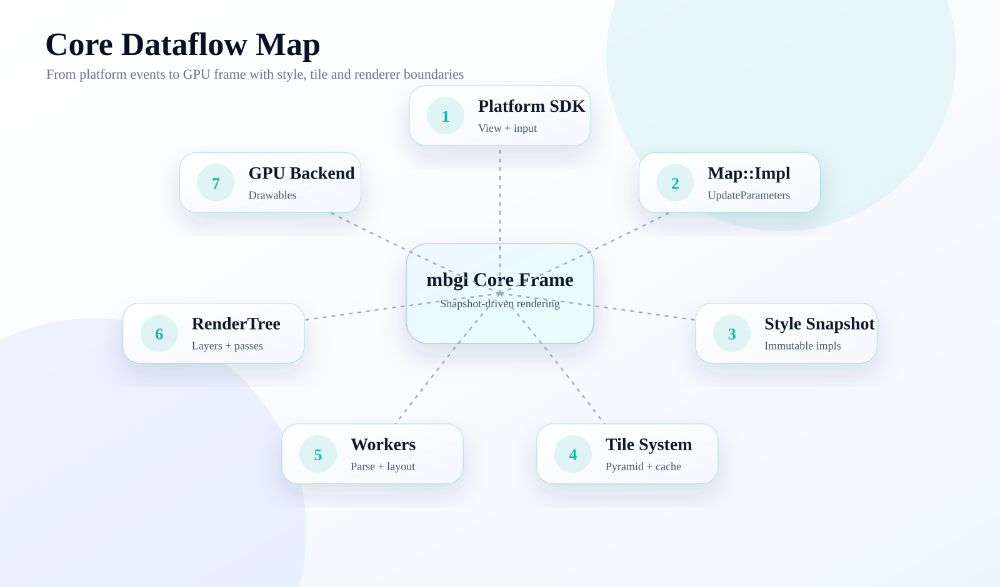
Immutable style diff
Đây là nền tảng concurrency và incremental rendering của engine.
RenderOrchestrator
Là bộ não của frame: diff, update, placement, render tree.
Tile worker state machine
Coalescing giúp tránh starvation khi tile/layer/dependency update dồn dập.
Backend modularization
GL/Metal/Vulkan/WebGPU nằm sau gfx, tạo đường cho Rust/wgpu-style thinking.